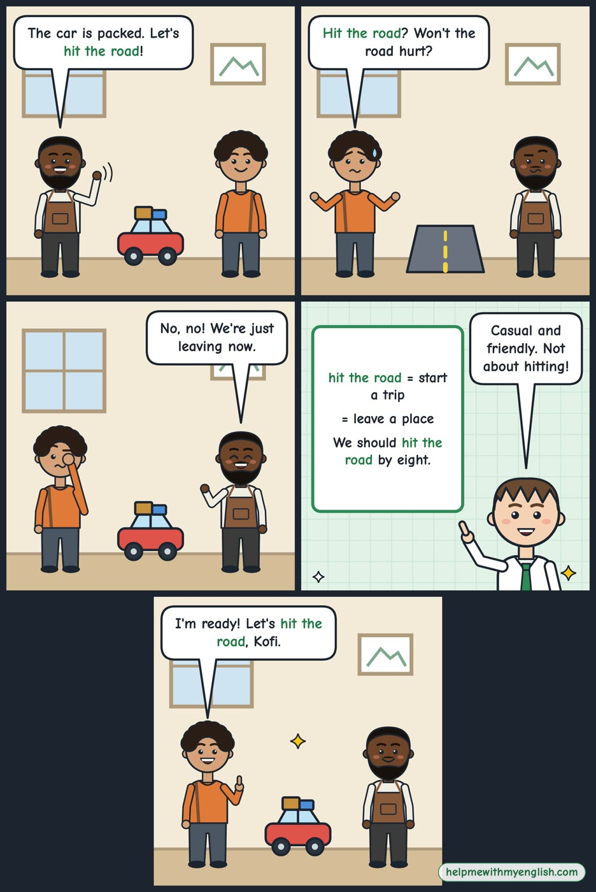

hit the road
To start a trip or leave a place.
We should hit the road by eight if we want to avoid traffic.
Tip: Use it as an informal verb phrase ("we'd better hit the road"); it describes leaving or starting a journey, not hitting anything, and it is usually said about a car trip but can mean leaving anywhere.
Hear it in conversation
Workbook
1. What does it mean?
In this conversation, what does "hit the road" mean?
2. Fill the gap
The meeting finished late, so Diego grabbed his bag and straight away to catch the last train.
3. Choose the best reply
Ken: It's already six, and the hotel is two hours away. Shall we get going?
4. Your turn: speak
Tell me about a trip you took with friends or family. How did the day begin?
Show an example answer
Last summer my cousins and I drove to the coast for the weekend. We wanted to avoid the traffic, so we hit the road at six in the morning, and everyone was still half asleep. It was worth it, though, because we reached the beach before it got crowded.
Answer key: hit the road
- 1. B. Leave and start the journey home
- 2. hit the road
- 3. C. Yes, let's hit the road before it gets dark.
- 4. Example: Last summer my cousins and I drove to the coast for the weekend. We wanted to avoid the traffic, so we hit the road at six in the morning, and everyone was still half asleep. It was worth it, though, because we reached the beach before it got crowded.
See it in a comic
